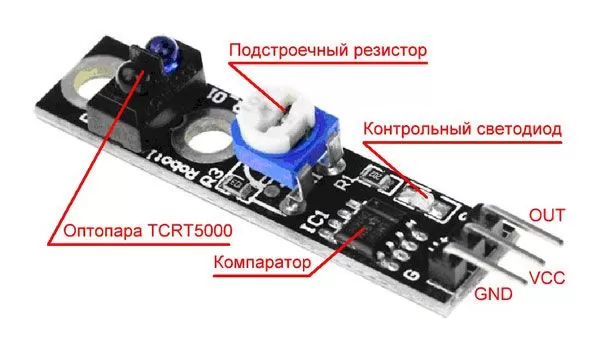
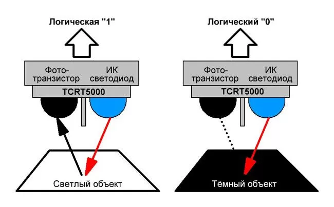
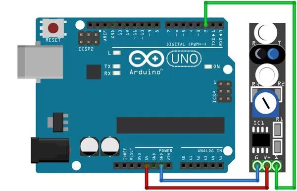

Модуль датчика линии KY-033
Модуль датчика линии KY-033 представляет собой датчик отражения инфракрасного излучения близко расположенным препятствием. Благодаря работе фотоэлемента в инфракрасном диапазоне излучения восприятие оттенков становится более контрастным, чем в видимом диапазоне света. Это облегчает применять модуль KY-033 для различения белых и черных участков поверхности. Конструктивные особенности позволяют использовать модуль датчика линии в классической задаче учебной робототехники – движение вдоль линии на полу. Если нанести полоски на вращающийся диск то датчик можно использовать для измерения скорости оборотов вала двигателя, колеса и других вращающихся деталей.

Инфракрасный светодиод и фототранзистор входят в компонент модуля TCRT5000L. Его сигнал поступает на вход микросхемы LM393YD . Переменным резистором выполняется настройка. В зависимости от применения модуля KY-033 выбирается режим работы. Благодаря настройке модуль датчика линии имеет широкий круг применения. Требуемая чувствительность зависит от расстояния до поверхности, оттенка светлых и темных участков. При работе в составе тахометра настройка проводится под ширину линий на вращающейся поверхности.
При подаче питания на модуль, инфракрасный светодиод начинает излучать свет, который отражаясь от белой поверхности попадает на фототранзистор. В таком режиме на выводе OUT (SIGNAL) будет установлена логическая единица. Как только в зону видимости датчика попадает чёрный объект, световой поток, поглощаясь этим самым объектом, перестаёт доходить до фототранзистора и компаратор переключает вывод OUT (SIGNAL) в логический ноль. (рис. 2). Настройка схемы для наибольшей разности уровней приводит к смещению напряжения выхода для каждого случая. Поэтому сигнал датчика подают на вход АЦП, а программу настраивают на наиболее надежное различение высокого и низкого уровней сигнала.

Технические характеристики KY-033:
- Тип используемого ИК датчика — TCRT5000.
- Длина волны излучения — 950 нм.
- Напряжение питания — 3,3...5,5 В.
- Потребляемый ток — 20 мА.
- Максимальная нагрузка на выход компаратора — 15 мА.
- Расстояние уверенного определения препятствия — 1-25 мм;
- Угол обзора — 35°.
- Рабочая температура — 0 – 50°C.
- Размеры (мм) — 77×48×12.
Назначение выводов модуля KY-033 (рис. 1) представлено в таблице 1.
Таблица 1
| Контакт | Назначение |
|---|---|
| OUT | Сигнальный выход |
| VСС | Напряжение питания |
| GND | Общий минусовой контакт |

Скетч:
#define PIN_SENSOR 2 //Макроопределение для подключения датчика линии к выводу 2 Arduino void setup() { Serial.begin(9600); //Инициализация монитора порта pinMode(PIN_SENSOR, INPUT); //Настраиваем на ввод вывод, к которому подключен датчик } void loop() { // Контролируем датчик с периодичностью около 200мс if(digitalRead(PIN_SENSOR)) { // если датчик не срабатывает Serial.println("LIGHT"); } else { //иначе датчик срабатывает Serial.println("BLACK"); } delay(200); }
Источники
umnyjdomik.ru - "KY-033" – датчик отслеживающий линию для ARDUINO